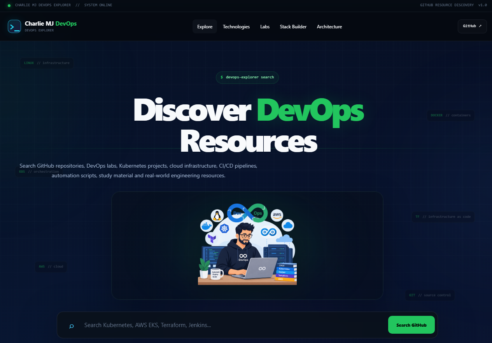

Hello, I'm Raja Muhammad Mustansar Javaid
DevOps Engineer | Cloud Enthusiast | Lifelong Learner
I build, automate, and manage modern infrastructure and CI/CD pipelines to deliver reliable, scalable, and secure applications. Passionate about cloud, Kubernetes, and DevOps best practices.
My Tech Stack
👤 About Me
I am a DevOps Engineer with a strong passion for cloud computing, containerization, and automation. I enjoy solving complex problems and building efficient, reliable, and scalable systems. I'm always exploring new technologies and improving my skills.
- 📍 LocationPakistan
- 🎯 FocusCloud | DevOps | Automation
"Automate. Deploy. Scale."
💼 Professional Experience
A quick summary of my career so far. I keep the complete, always-current version on LinkedIn — the card below links straight to it.
Company Name
- Designed and maintained CI/CD pipelines using Jenkins, GitHub, and Docker.
- Managed AWS infrastructure and automated deployments with CloudFormation.
- Worked on container orchestration with Kubernetes.
Company Name
- Managed Linux servers and monitored system performance.
- Implemented backup and disaster recovery solutions.
- Supported application deployment and troubleshooting.
Company Name
- Assisted in infrastructure setup and configuration.
- Worked with Docker and basic CI/CD tools.
- Resolved issues and supported production environments.
🎓 Current Learning
Always learning and exploring new technologies to grow as a DevOps engineer.
📁 My Projects
End-to-end DevOps projects. Loaded live from activity/projects/*.md — add a new file there and it appears here automatically.
Loading projects…
🧪 Hands-on Labs
Smaller, focused practice exercises. Loaded live from activity/labs/*.md.
Loading labs…
🕒 Latest Activity
A running log of what I'm doing day to day. Loaded live from activity/journal/*.md.
Loading latest activity…
🏆 DevOps Challenges
Hands-on challenges I set myself. Loaded live from activity/challenges/*.md.
Loading challenges…
🧭 Charlie MJ DevOps Explorer
My GitHub Pages project: search GitHub repositories, DevOps labs, Kubernetes projects, cloud infrastructure, CI/CD pipelines and study material in one place.
